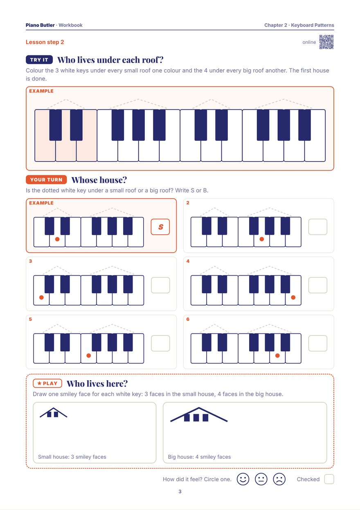

The piano looks like 88 different keys, but it is one small pattern, repeated. Learn the pattern first, and you always know where you are on the piano.
The black keys are the roofs of the houses. Two black keys together are the roof of a small house; three are the roof of a big house. Small, big, small, big: the same two houses repeat all the way up the piano. Look for the shapes, not the single keys.
A white key is never just anywhere: each one lives under a roof. Under the small roof live 3 white keys (the left door, the inside and the right door); under the big roof live 4. Three and four make seven, and after seven the street starts again.
This grouping is the key idea of the chapter. A student who sees it finds every note name from the pattern, instead of counting up from the bottom of the piano.
A real piano has 88 keys, 52 white and 36 black, yet it is still only the two houses: 7 small ones and 7 big ones. At the very bottom stands one lonely black key with no house at all: the lighthouse, by the sea.
Count the small houses from the bottom up to the 4th one: its left door is middle C. Middle C is the ground: go right and the notes climb up into the sky, higher and higher; go left and they dive down under the sea, lower and lower.
Playing needs no written notes at all: just the black-key roofs and fingers 2, 3 and 4. The right hand plays on the big roof, the left hand's 2 and 3 on the small roof. Fingers 1 and 5 come later, with the C position.
Then the echo game: someone plays two or three black keys, and you play them straight back. And make up your own: any black keys, in any order, smooth and joined.
Show, don't tell: each one is shown on the keyboard.

Colour the 3 white keys under every small roof and the 4 under every big roof, decide whose house six dotted keys belong to, then draw the two families. One A4 page.
Print this pageThe whole chapter: Lesson Book + WorkbookTap a white key and watch its whole house light up, count the houses on all 88 keys, and jam on the black keys with the band.
Open the lessonCount the groups of two black keys from the bottom of the piano. At the 4th group, the white key just to its left is middle C.
The black keys come in groups of two and three, and every white key belongs to one of those groups: three at the group of two, four at the group of three. Once that pattern is seen, every note name can be found from it instead of by counting.
88: 52 white keys and 36 black keys. The same pattern of two and three black keys repeats seven times, with one extra black key at the very bottom.